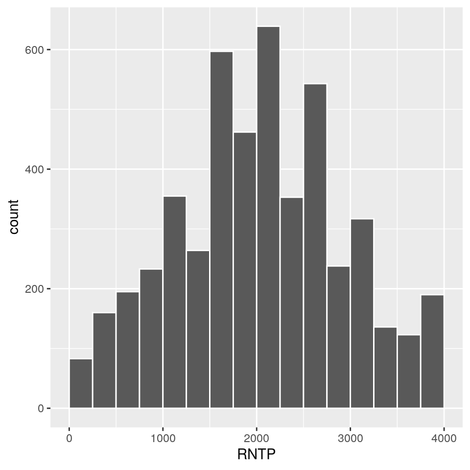
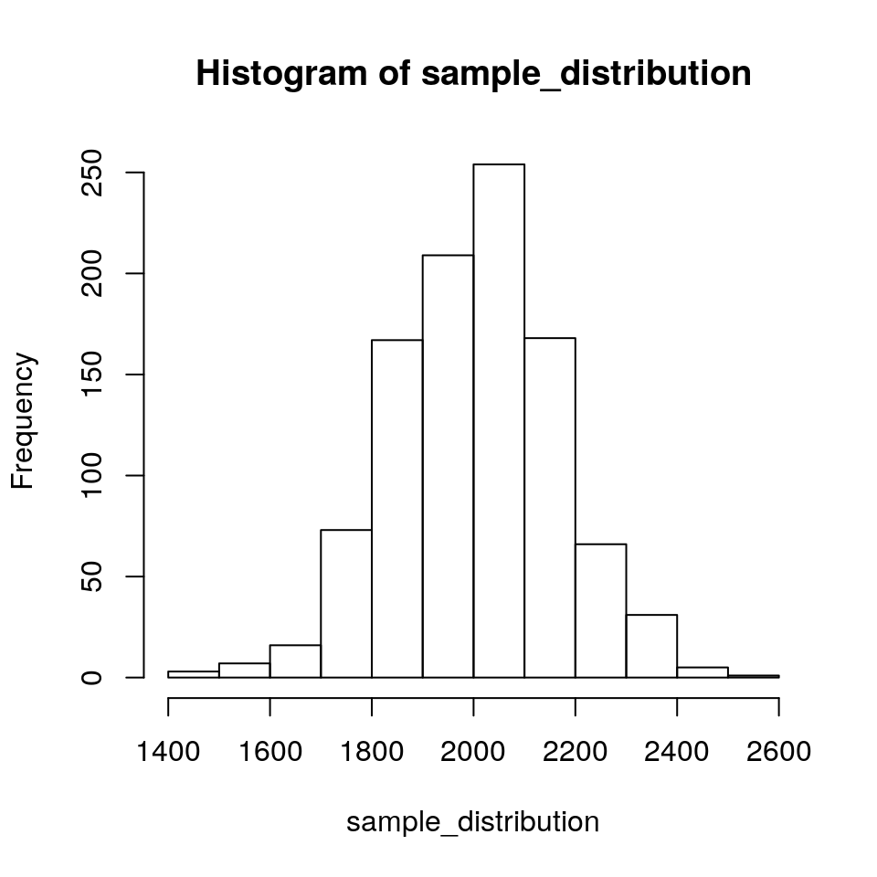
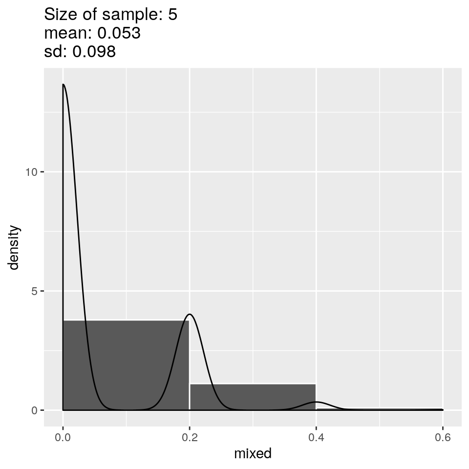
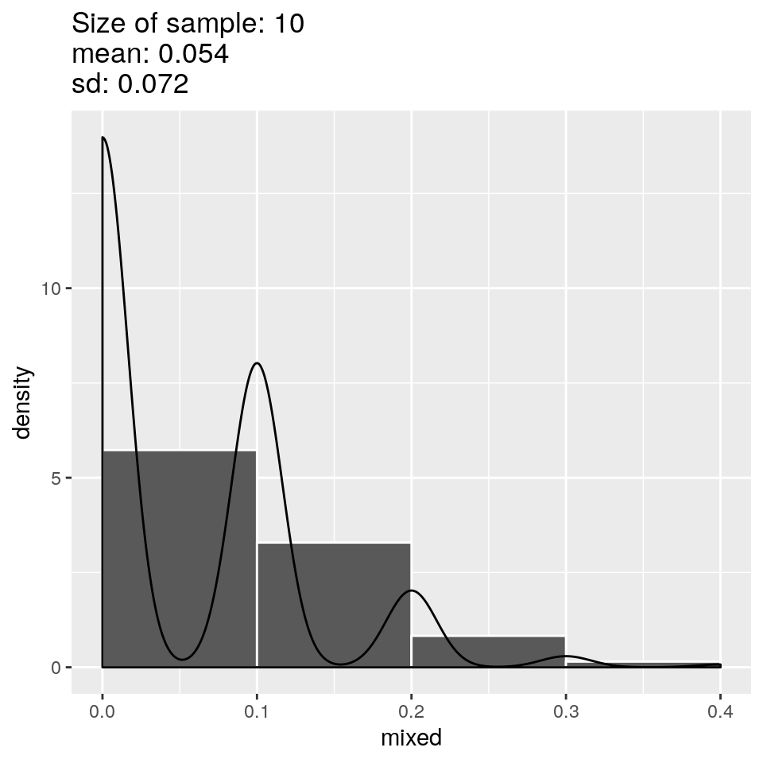
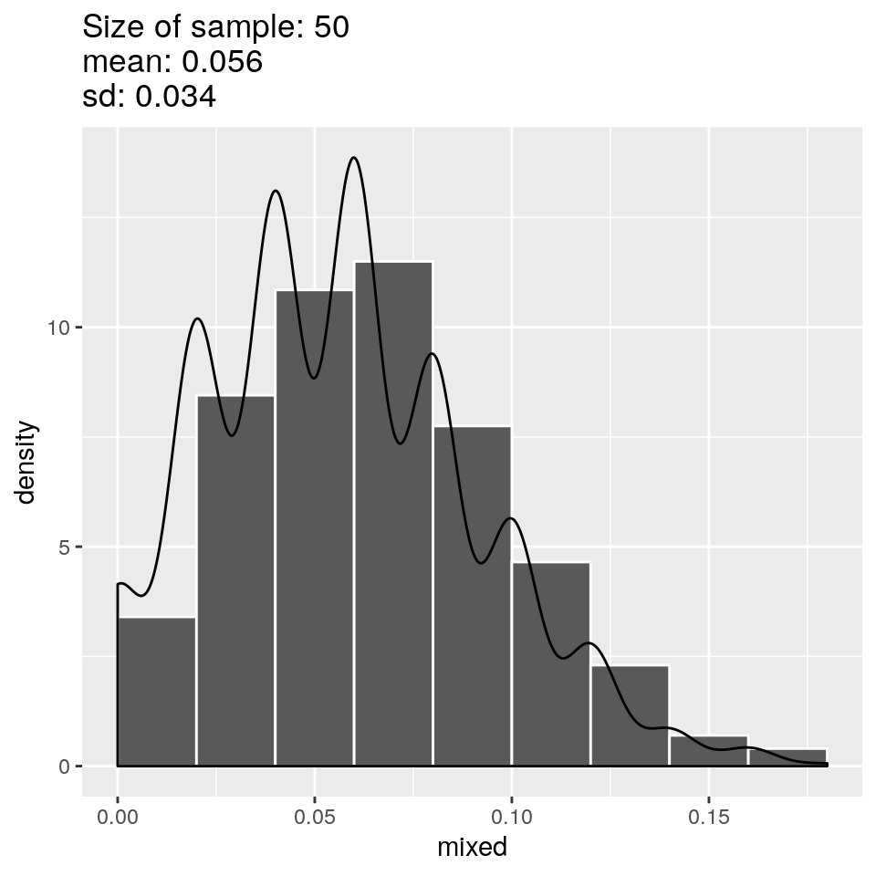
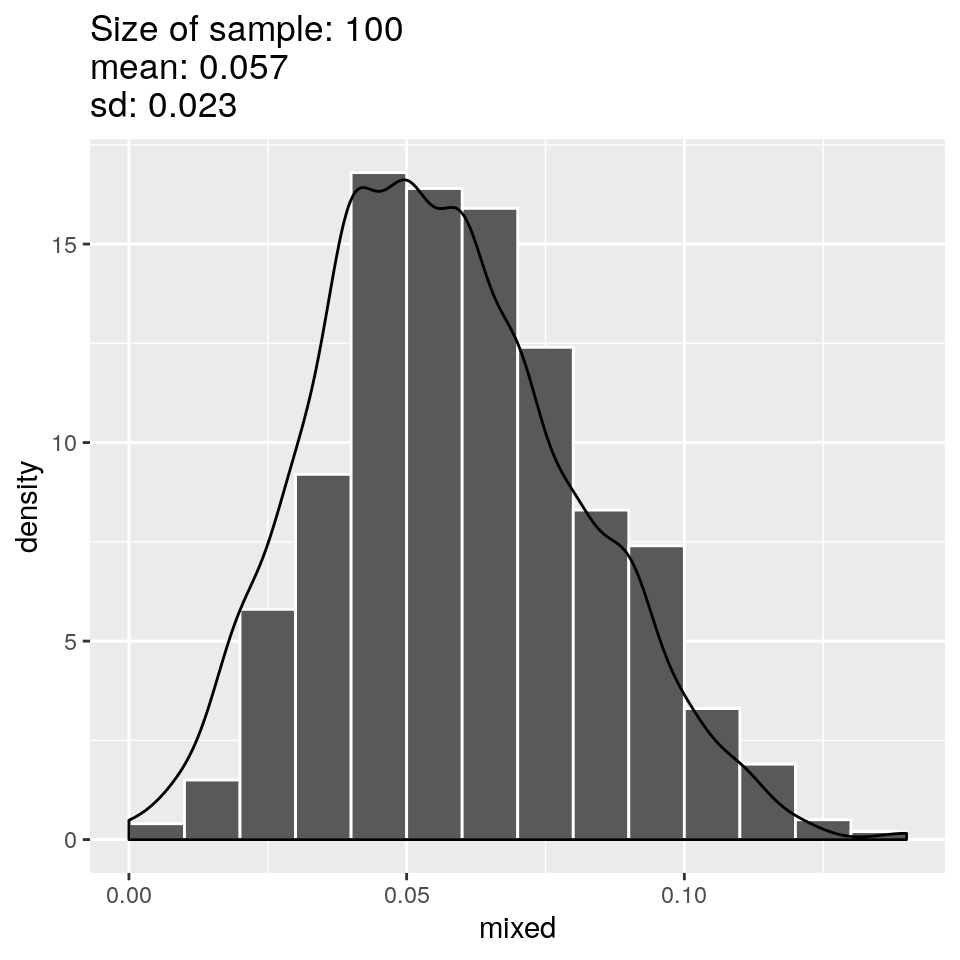
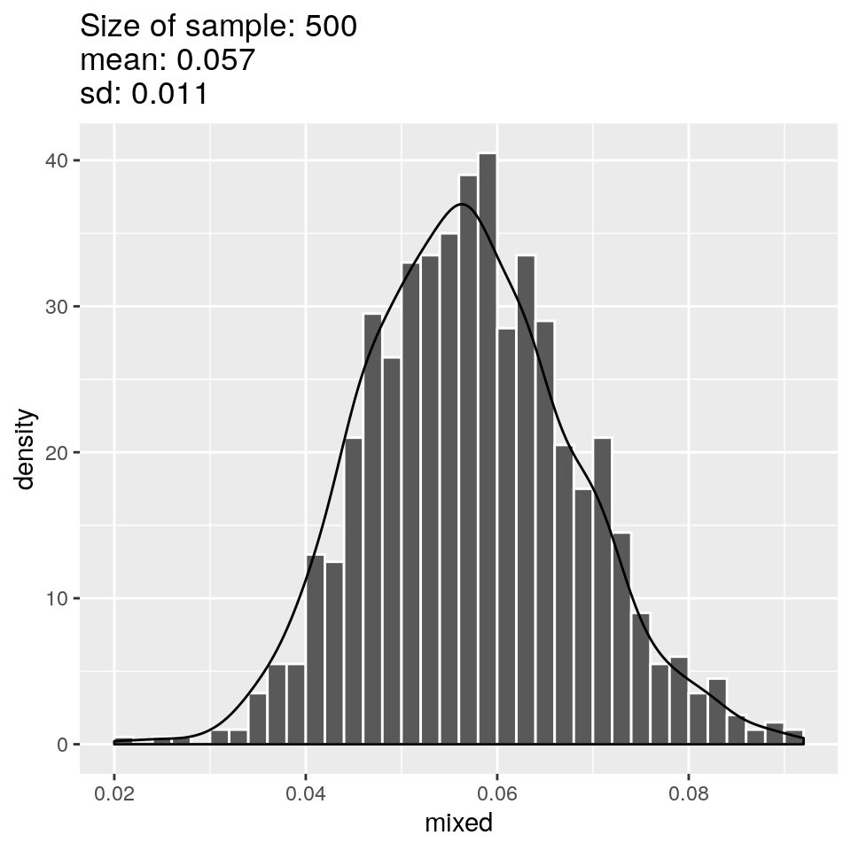
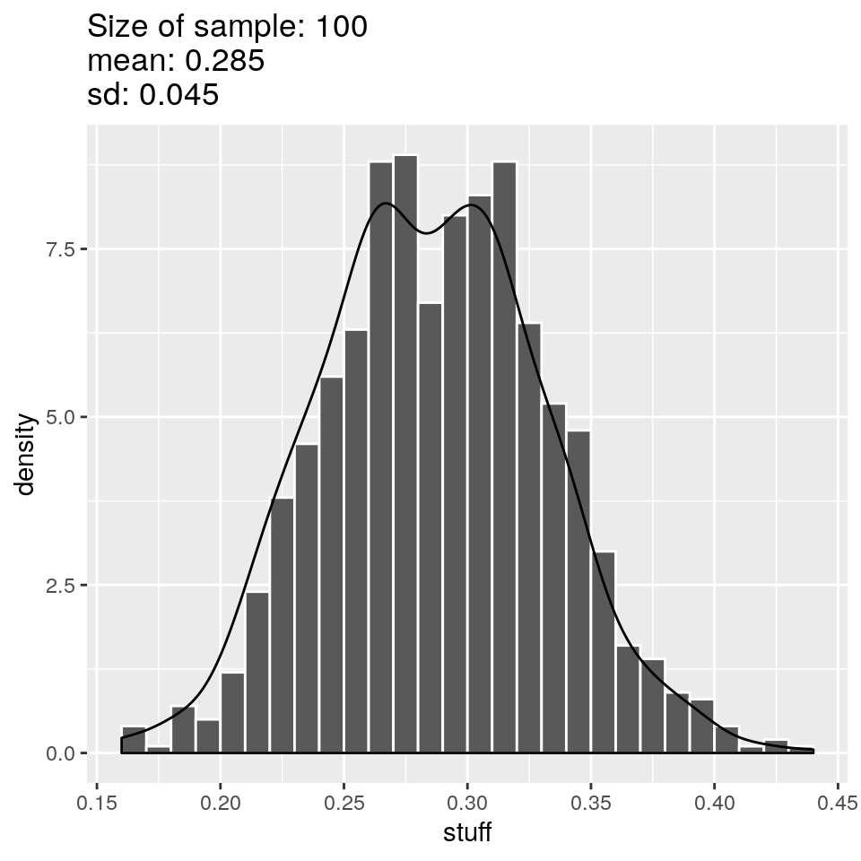
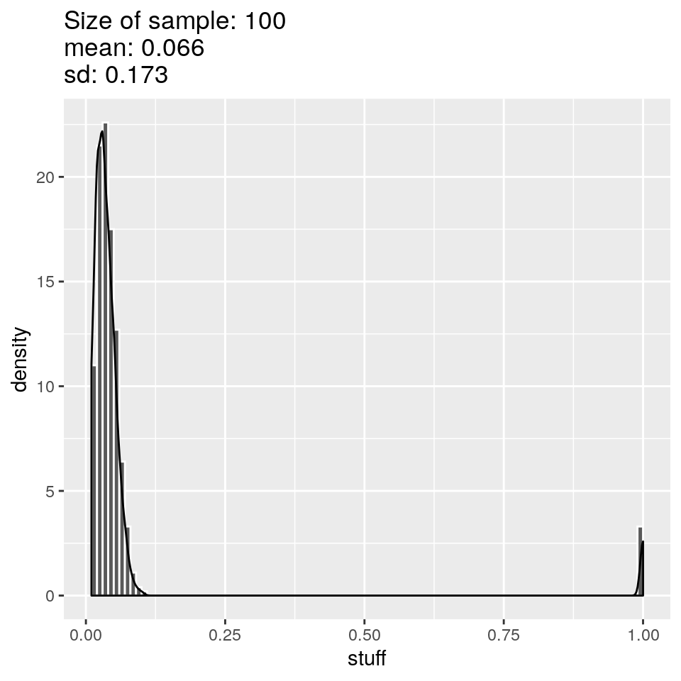
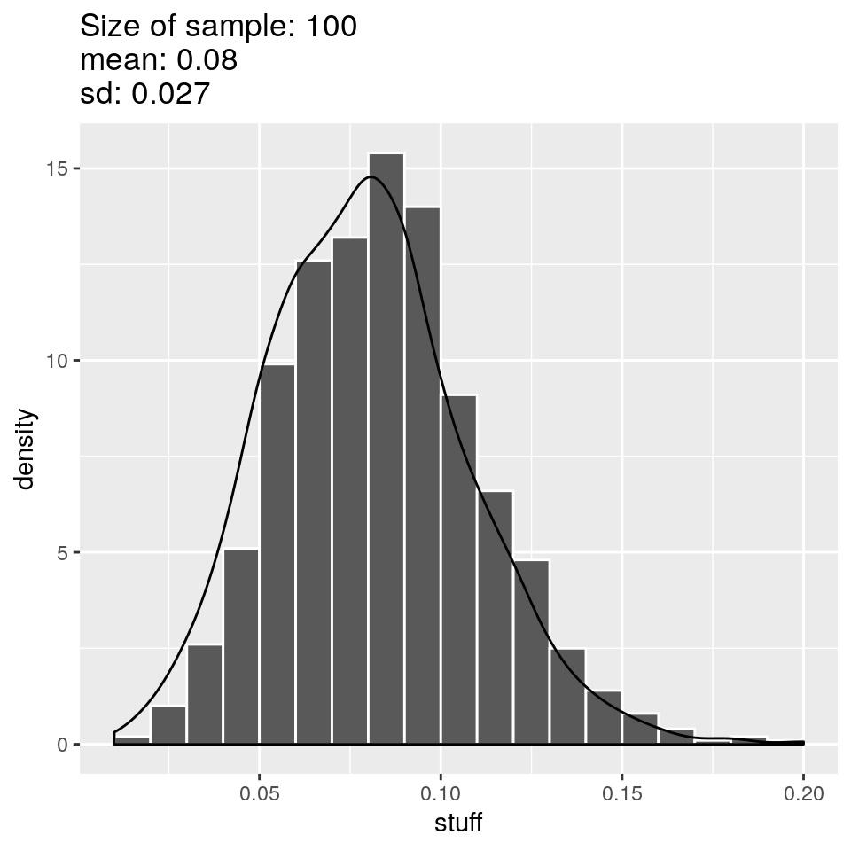

5 Inference
knitr::opts_chunk$set(warning=FALSE,
message=FALSE,
fig.width=5,
fig.align="center") # No warnings
library(dplyr) # For pipe and other data commands
library(tidyr) # For drop_na
library(janitor) # For tabyl
library(ggplot2) # For plotting using ggplot() function
library(knitr) # For making tablues using kabble()
#library(kableExtra) # For styling
load("~/Data/output/ACS_clean.RData")
ls()## [1] "ACS2018_ASC_raw" "mydata_clean" "mydata_raw"The Census Bureau funds the ACS to provide timely information on a yearly basis. The data is used to make decisions about funding, determine how communities, and much more. This leads to the question–how accurately does a sample represent the population? Our goal is quantify this.
When the results of a sample are used to make an educated guess about a population, we call this inference. This implies there is a one-to-one correspondence between what is seen in the sample and the population. As an example, suppose we want to know the percentage of renters in a city. We can infer this value by taking a random sample of households and finding the percentage of renters in the sample. The two should values should be fairly close if the sample is random. The value we are actually want to know (about the population) is called the true value. The information we actually have (from the sample) is called the estimate.
This process of using the sample to estimate the true value of a population works but there are kinks to work out. How well and how often do the sample estimates match the true value of the population? Usually never, in the sense that they are exactly the same. Usually it’s pretty close though. The question is how close is it? Is it always close? What’s the worst case scenario?
5.1 Sample Distribution
We will investigate how well random samples represent a population. In the real world, you lack information about the population and can only get information about it by trying samples. Luckily we can use computers to simulate how well this process works.
We are going to pretend that our sample is the population.
mydata_clean %>%
distinct(SERIALNO, RNTP) %>%
ggplot(aes(RNTP)) +
geom_histogram(binwidth = 250,
closed = "left",
boundary = 0,
color = "white") 
The distribution is symmetric so the proper measure of center and spread are mean and standard deviation.
mydata_clean %>%
distinct(SERIALNO, RNTP) %>%
summarize(Mean = mean(RNTP, na.rm = T),
SD = sd(RNTP, na.rm = T)) %>%
kable()| Mean | SD |
|---|---|
| 2004.136 | 892.5093 |
The question is:
- If we take samples will the mean of the sample “estimate” be close to the mean of the population “true-value”?
- How often will the “estimate” be close to the “true-value”?
- Is there a worst case scenario e.g. the “estimate” will always be no more or no less than \(x\) of the “true-value”?
5.1.1 Simulating the sample distribution
A sample distribution is made by repeating this process.
- Take a sample of size \(n\) from the population.
- Calculate a value such as an average of the sample.
- Store the value somewhere
The sample distribution is the collection of values from the different samples. If you calculate a mean from each sample then the sample distribution is the collection of means. A sample distribution has as many values as samples. Usually there will be several thousand or million samples. We will take a thousand samples.
population <- mydata_clean %>%
distinct(SERIALNO, RNTP) %>%
drop_na()
population %>%
sample_n(30) %>%
summarize(Mean = mean(RNTP, na.rm = T),
SD = sd(RNTP, na.rm = T)) %>%
kable()| Mean | SD |
|---|---|
| 1937.667 | 900.5389 |
This one sample worked fairly well but what we want to do is take lots of samples. We will analyze this sample distribution to quantify how well random sampling works.
## [1] 2004.055
5.2 Normal Distribution
5.3 Confidence Intervals
5.4 OLD VERSION
We continue with examining the association or independence of two categorical variables.
| new_RAC1P | n | percent |
|---|---|---|
| White alone | 16031 | 0.4498288 |
| Black or African American alone | 1739 | 0.0487962 |
| American Indian alone | 157 | 0.0044054 |
| Alaska Native alone | 4 | 0.0001122 |
| American Indian | 71 | 0.0019923 |
| Asian alone | 12456 | 0.3495146 |
| Native Hawaiian and Other Pacific Islander alone | 200 | 0.0056120 |
| Some Other Race alone | 2946 | 0.0826646 |
| Two or more races | 2034 | 0.0570739 |
| Total | 35638 | 1.0000000 |
sample_distribution <- function(x) {
replicate(1000, mydata_clean$new_RAC1P %>%
sample(size = x, replace=T) %>%
table() %>%
getElement(2) %>%
(function(i) {i/x})()
) %>%
hist(main = paste("Size of sample:", x, sep=" "))
}
lapply(c(10, 50, 100, 250, 500, 1000, 2000, 3000), sample_distribution)##
## . [,1]
## White alone 12
## Black or African American alone 0
## American Indian alone 0
## Alaska Native alone 0
## American Indian 0
## Asian alone 8
## Native Hawaiian and Other Pacific Islander alone 0
## Some Other Race alone 0
## Two or more races 0sample_distribution <- function(x) {
mixed <- replicate(1000, mydata_clean$new_RAC1P %>%
sample(size = x, replace=T) %>%
table() %>%
getElement(9) %>%
(function(i) {i/x})()
)
tibble(mixed) %>%
ggplot(aes(x=mixed)) +
geom_histogram(aes(y=..density..),
boundary = 0,
closed = "left",
#binwidth=0.01,
binwidth=round(1/x, 3),
color="white"
) +
geom_density() +
ggtitle(paste("Size of sample: ", x, "\nmean: ", round(mean(mixed), 3), "\nsd: ", round(sd(mixed), 3), sep=""))
}
lapply(c(5, 10, 50, 100, 500), sample_distribution)## [[1]]
##
## [[2]]
##
## [[3]]
##
## [[4]]
##
## [[5]]
5.5 Corona Virus
You’re the local health official in a small town in Italy. The future of 10,000 is in your hands. This is the population. You don’t know it but 8% of the citizens have Corona virus.
| infection | n | percent |
|---|---|---|
| infected | 800 | 0.08 |
| not infected | 9200 | 0.92 |
More information you don’t know, 18.6% of citizens currently have symptoms but don’t necessarily have the virus.
You aren’t like the Chinese. You can’t afford to test everyone. You only have 100 test kits available. How likely are the results in your sample to reflect the actual 8%?
| symptoms | n | percent |
|---|---|---|
| asymptomatic | 8137 | 0.8137 |
| symptomatic | 1863 | 0.1863 |
You have two options:
- Test a random sample of 100 people.
- Test a random sample of 100 people who have symptoms.
Which do you think will give you a more accurate answer?
Here are the results of a random sample of 100 people. The results are fairly close.
| infection | n | percent |
|---|---|---|
| infected | 5 | 0.05 |
| not infected | 95 | 0.95 |
Here are the results of a random sample of 100 people who had symptoms. The apparent percentage of infections is much too high.
| infection | n | percent |
|---|---|---|
| infected | 26 | 0.26 |
| not infected | 74 | 0.74 |
| infection | n | percent |
|---|---|---|
| infected | 3 | 0.03 |
| not infected | 97 | 0.97 |
5.6 Sample Distribution
Some samples are better than others as we saw. But even a random sample can be horribly wrong. Suppose you kept testing groups of 100 people over and over. Each random sample would have a slightly different rate of infections. This is called variability (each sample is different due to randomness).
How different from the actual rate of infection (8%) might a random sample get? This is called simulation of a sample distribution.
Here are the results for 1,000 different samples of 100 symptomatic citizens. Some samples had as low as 20% infected but some had as high as 50% infected. The typical value or average value for the different samples is 29% which is way too high.

Here are the results for 1,000 different samples of 100 asymptomatic citizens. Some samples had as low as 0% infected but some had as high as 100% infected. The typical value or average value for the different samples is 6.8% which is very close to the real value but the different samples are all over the place.

Here are the results for 1,000 different samples of 100 random citizens (with no bias towards lack of or presence of symptoms). Some samples had as low as 4% infected but some had as high as 16% infected. The typical value or average value for the different samples is 8.1% which is correct! This distribution does the best job and in general is fairly close to the correct answer even if sometimes it’s not quite right.
